Strava Dash
Strava Dash é um dashboard de análise de desempenho desportivo que consome a API oficial do Strava através de autenticação OAuth2, permitindo visualizar estatísticas detalhadas de corrida e ciclismo. A aplicação foi construída em React com Vite e Tailwind CSS (estilo glassmorphism), utilizando Recharts para os gráficos de performance, Framer Motion nas animações de interface e FullCalendar para o calendário de atividades. O projeto inclui ainda mapas das rotas através da Mapbox Static API e um servidor Express dedicado à ponte de autenticação com o Strava. Está organizado em três grandes áreas: Análise Geral (painel, atividades e calendário), Performance (volume, altimetria, zonas de ritmo e estatísticas) e Atleta (perfil, equipamentos, recordes e segmentos).
↗ Código no GitHubArquitetura & Engenharia
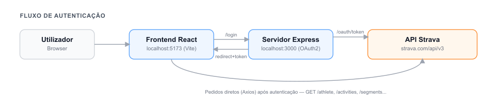
O login não passa apenas pelo frontend: o React redireciona para um servidor Express dedicado, que negoceia o OAuth2 com a API do Strava e devolve o token à aplicação. Todos os pedidos seguintes (atividades, atleta, segmentos) são feitos diretamente via Axios com esse token.
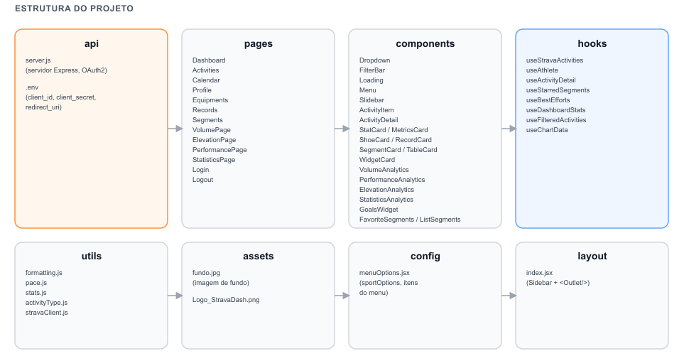
Organização por responsabilidade: páginas, componentes e hooks isolados por domínio (análise geral, performance e atleta), com uma camada própria de utils para formatação, ritmo e estatísticas.
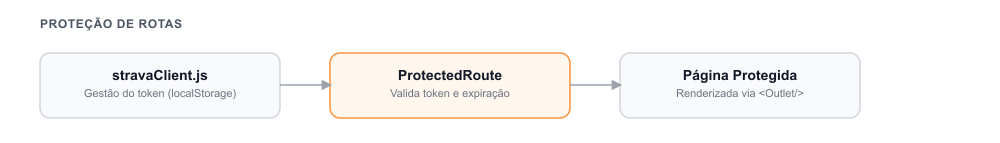
Um ProtectedRoute valida o token e a sua expiração
antes de renderizar qualquer página autenticada, redirecionando
automaticamente para o login sempre que a sessão deixa de ser
válida.
Autenticação
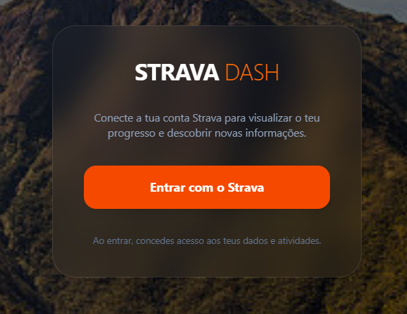
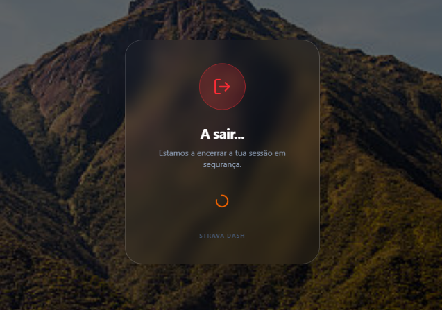
Análise Geral

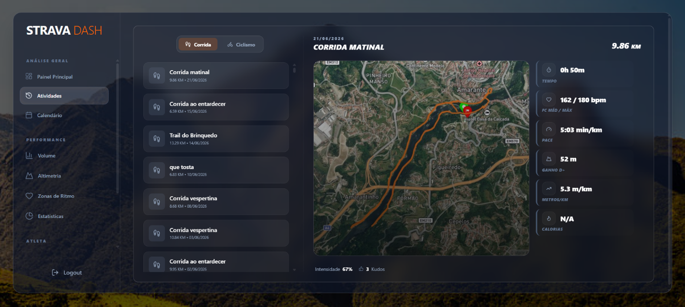
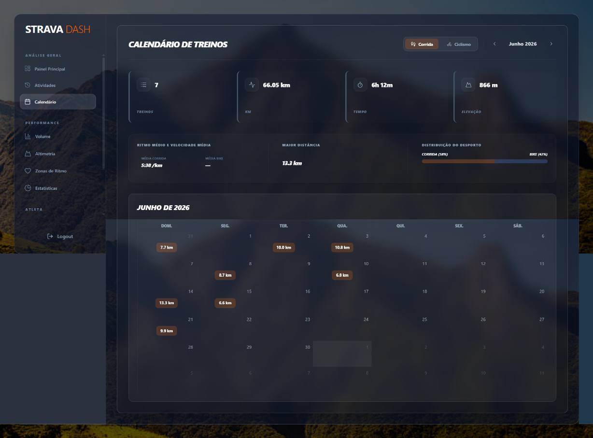
Performance
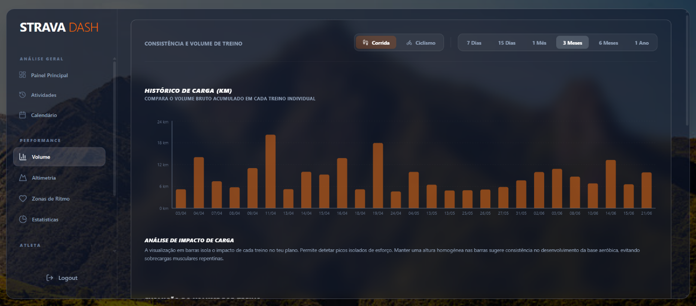
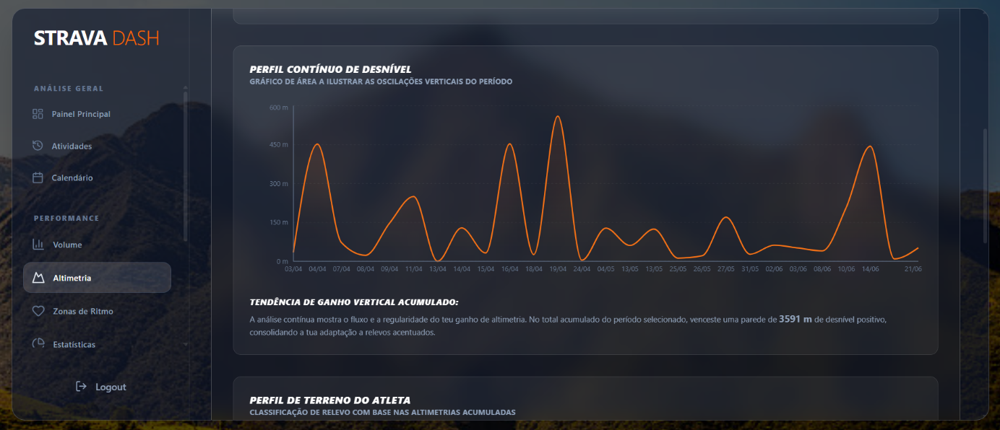
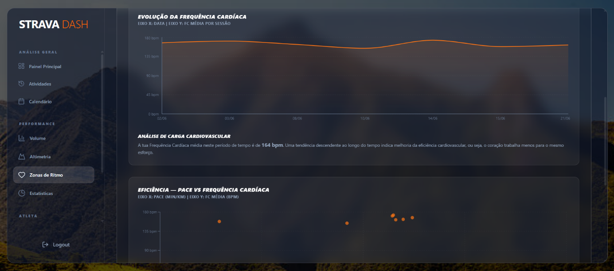
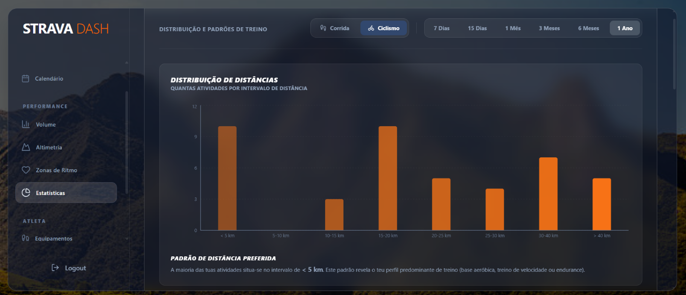
Atleta
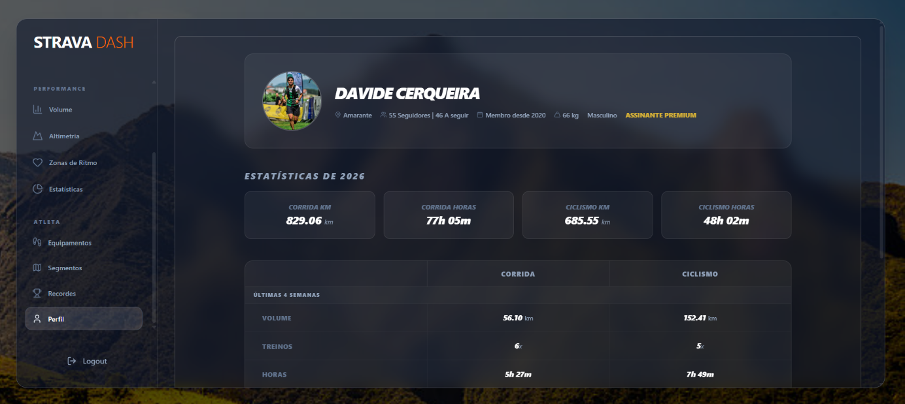
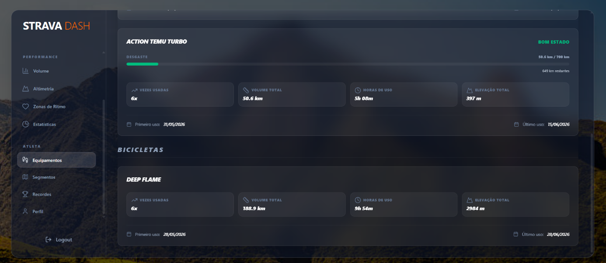
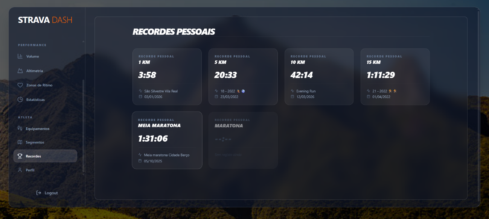
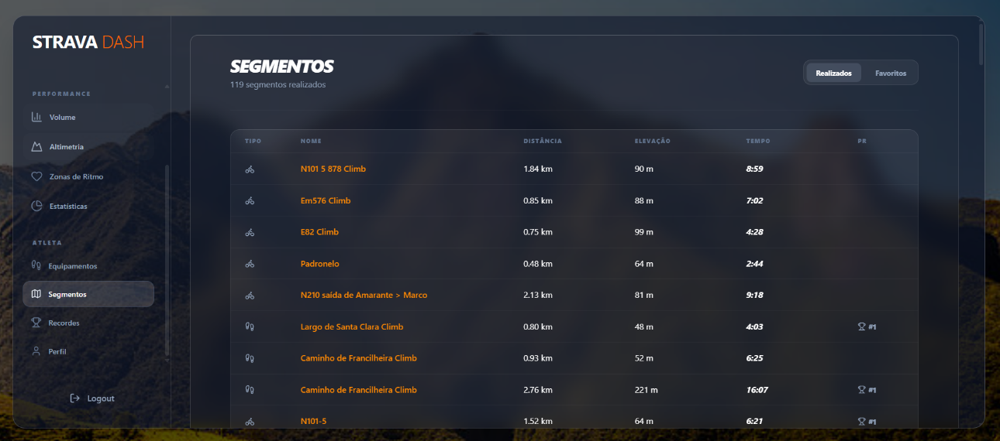